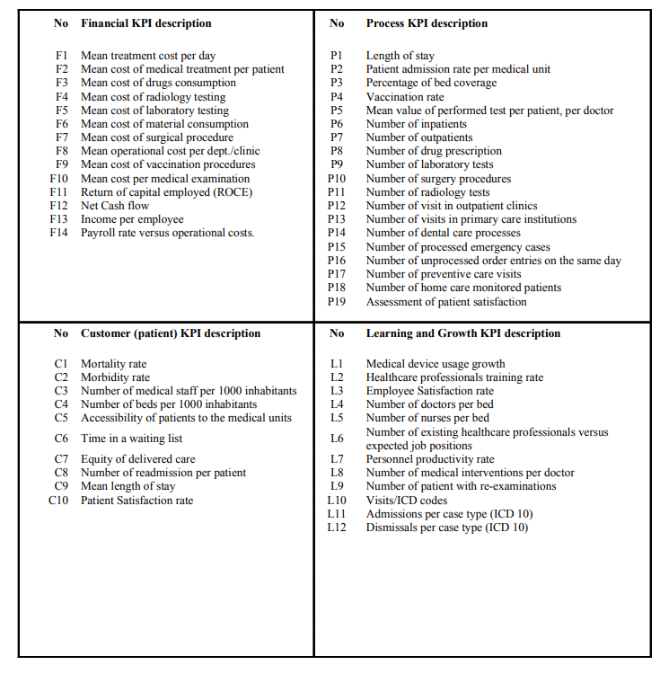

<html>
    <head>
        <title>Page 151-155</title>
        <link rel="stylesheet" href="style.css">
    </head>
    <body>
        <p>
            mean much without a metric. In Greece, most of inpatient treatments are based upon fixed prices per day and do not follow the pay per service model which is financially moreviable
        </p>
        <p>
            Healthcare financials are part of a national policy aiming at providing high quality healthcare services to all citizens regardless of their income, social status or other
            characteristic. As a consequence, the use of the fixed price model (per day quotas) in Greece serves that purpose albeit with its advantages and disadvantages. Current
            treatment cost per day (for an inpatient) has been fixed to about 135 Euros and this value
            could be used as an initial metric. If this value is exceeded this would mean that the RHA
            budget will cover the difference or transfer the cost to insurance companies and social
            welfare. In addition, a regional healthcare authority will then have credible proof that
            national standards are outdated and require revision in order to support the system. As
            a result, this KPI has now a specific meaning linked to regional strategy and budgetary
            needs. Following that example, all financial KPIs are therefore an important perspective
            of BSC since they are the measurement of the financial viability of the regional healthcare
            authority. In fact, all KPIs should be associated with adequate metrics in order to be
        </p>

        <p>
            <i>Table 2. KPIs in a regional healthcare setting</i>
        </p>
        
        
        
        <p>
            assessed, thus driving the RHA towards the right strategic decisions.
        </p>
        <p>
            In order to meet and populate the above-mentioned KPIs a regional healthcare authority
            has to implement a complex information technology system in order to gather up all
            needed information. Then the information collected through the use of enterprise
            resource planning software, hospital information systems, clinical information systems,
            radiology information system, and laboratory information systems has to be processed
            and interpolated to produce the final metadata set from which the KPIs are driven. In other
            words, the model is complemented by a business intelligence solution similar to the one
            depicted in Figure 4.
        </p>
        <p>
            Figure 4 shows how data are collected from the various data sources, cleansed and
            homogenised, and finally redistributed to the knowledge workers and decision makers
            of the regional healthcare authority (Extraction, Transformation and Load—ETL).
        </p>
        <p>
            The data collection process is extremely important since it is a basic feature of success-fully populating the KPIs. In that sense both organizational and technological issues to
            achieve data quality should be considered. In the proposed setting, the regional
            healthcare authority has imposed on its healthcare units the use of specific classifica-tions, codifications and taxonomies such as the 10th edition of the International Classification of diseases (ICD10). In addition, the proposed KPIs can be seen as attributes of
            structure, process or outcome (based upon the Donabedian approach) so that they can
            be used to draw an inference about quality. As such the KPIs are proposed, designed,
            tested and assessed by a panel of experts (executive officers of the RHA, practitioners).
            By implementing this organizational structure the quality level of the proposed KPIs is
            such that technological issues are greatly reduced.
        </p>
        <p>
            <i>Figure 4. Regional healthcare authority business intelligence framework</i>
        </p>
        
         <h1 style="text-align: center;"><b>Future Trends</b></h1>
         <div class="underline"></div>
         <p>
            Up to this point, this chapter has mostly dealt with organizational and strategic features
            of knowledge management in healthcare. In the proposed use case we have shown an
            ongoing implementation of a Balanced Scorecard Framework in a regional healthcare
            authority environment. This has been done intentionally wishing to state that the
            technological part on such an implementation is probably the less important issue. If one
            regards the future trends in knowledge management, one can see that a multitude of new
            tools are already proposed for use. This chapter will briefly set the focus on the trends
            that to our knowledge are the most promising and present more opportunities to
            healthcare organizations in creating effective performance management facilities.
         </p> 
         <p>
            <i>Service Oriented Architecture and Patient-Centered Architecture(Based on the Electronic Health Record)</i>
        </p>
        <div class="underline1"></div>
        <p>
            The term of patient-centered architecture has been already in the literature for some
            years. Many techniques have been used in the past such as Corbamed (Object Manage-ment Group, 2001) and Distributed Healthcare environment (DHE). The introduction of
            web technologies such as the Extensible Markup Language (XML), the Simple Object
            Access Protocol (SOAP), the Web Services Description Language (WDSL), and more
            precisely the concept of Web Services (Deitel, Deitel, DuWaldt, & Trees, 2003; W3C,
            2003) are driving information technologies towards a Service Oriented Architecture
            (SOA).
        </p>
        <p>
            A service is a software component that is suitable for cross-application access. A service
            is never a complete application or transaction. It is always a building block. SOA is the
            architecture of an application that uses services. Services define reusable business
            functions; SOA binds services into applications. Logically, services are defined by their
            interfaces. Technically, services are defined by their implementations (sometimes com-plex integrated flows, other times a single simple program). SOA is a logical concept, and
            its design is focused on the definition of service interfaces and interactions between
            service interfaces. Fundamental to SOA is the loose coupling between its components.
            At the logical level, this translates to the ability to add a new service for the end-user
            unobtrusively to the service provider. At the technical level, this translates to the ability
            of software developers to deploy a new application that calls a service without the need
            to redeploy or change the service. The use of SOA will allow the creation of process-based components of applications that will manipulate knowledge and information based
            upon the processes and the required or designed outcomes.
        </p>
        <p>
            <i>The Semantic Web</i>
        </p>
        <div class="underline1"></div>
        <p>
            The Semantic Web goes beyond the World Wide Web by encoding knowledge using a
            structured, logically connected representation, and by providing sets of inference rules
            that can be used to conduct automated reasoning. Whilst the idea of knowledge
        </p>
        <p>
            representation languages is not new, existing languages generally use their own set of
            ontologies and inference rules to identify and eliminate logical contradictions and
            inconsistencies. The Resource Description Framework—RDF (W3C, 2003) and XML
            Topic Maps (TopicMaps.Org, 2001) are the most promising tools towards the implemen-tation of the Semantic Web in practice. Nevertheless, a long way towards maturity has
            still to be covered since issues such as specific metadata frameworks and data quality
            are not yet solved. In any case, the Semantic Web should enhance the promotion of
            clinical practice guidelines and evidence based medicine. They can be seen as taxono-mies of medical cases that could be both used for performance monitoring (in respect to
            commonly agreed levels of delivered care) and decision support for the healthcare
            practitioners.
        </p>
        <p>
            <i>Critical Pathways</i>
        </p>
        <div class="underline1"></div>
        <p>
            Critical Pathways (Wall & Proyect, 1998) are mechanisms for transforming a reactive
            bureaucratic ritual to a dynamic, indispensable, clinical improvement process. A critical
            pathway when established is a mechanism for:
        </p>
        <ul>
            <li>Integrating continuous quality improvements with traditional patients’ care review</li>
            <li>Managing and impacting of clinical and financial outcomes for a specific treatment
                procedure</li>
            <li>Proactively addressing economic and regulatory changes</li>
            <li>Improving clinical outcomes through reduction in variation</li>
            <li>Controlling unnecessary cost and resource usage without jeopardising quality of
                care</li>
            <li>Fostering multi-disciplinary approach to patient care</li>
            <li>Linking quality management to staff education</li>
            <li>Managing limited financial resources</li>
            <li>Making efficient use of scarce organizational resources</li>
            <li>Increasing readiness for anticipated changed in healthcare</li>
            <li>Applying and using clinical practice guidelines and other taxonomies set up by
                different professional societies</li>
        </ul>
        <p>
            Critical Pathways can be seen as “specialized” performance management tools that
            would provide a BSC framework with very specific performance indicators for each
            treatment or clinical process.             
        </p>
        <h1 style="text-align: center;">Conclusions</h1>
        <div class="underline"></div>
        <p>
            Performance management is a key issue in the continuous process of delivering high
            quality healthcare services. The use of KPIs has proved that the design of a Balance
            Scorecard acts as the “cockpit” of a regional (or national) healthcare authority where all
            metrics are the flight instruments enabling the provision of healthcare based upon equity,
            financial control, continuous process and structure refinement, and outcome measure-ments. In that sense, the proposed infrastructure is, technologically speaking, an
            important knowledge management tool that enables knowledge sharing amongst various
            healthcare stakeholders and between different healthcare groups. The use of BSC is an
            enabling framework towards a knowledge management strategy in healthcare since KM
            is about discovering knowledge from existing information, about creating new knowl-edge and about implementing processes and taxonomies that enable the reuse and
            assessment of information as part and bits of knowledge. 
        </p>
        <p>
            Knowledge can be seen as a performance management tool both for administrative
            purposes and clinical improvements.
        </p>
        <p>
            During the implementation process of deploying a technological platform for perfor-mance management or any other type of knowledge management infrastructure, one must
            have in mind that:
        </p>
        <ul>
            <li>
                The six issues described in the introduction section must being taken into strong
                consideration from day one.
            </li>
            <li>
                It is important to focus on people, processes and outcomes, and to set-up a straight-forward strategy to plan, manage, assess, educate, disseminate, and maintain the
                developed BSC framework.
            </li>
            <li>
                Any type of knowledge management project bases its success on continuous
                improvement and assessment. Metrics and processes are meant to change in order
                to reflect improvements towards quality of healthcare.
            </li>
            <li>
                The knowledge and technology is there, but still very limited best practices have
                been successfully implemented.
            </li>
            <li>
                The implementation of BSC framework is a time consuming process that has to
                involve all stakeholders’ representatives.
            </li>
        </ul>
        <h1 style="text-align: center;">References</h1>
        <div class="underline"></div>
        <p>
            Aidermark, L.G. (2001). The meaning of balanced scorecards in the health care organi-zation<i>Financial Accountability & Management, 17(1), 23-40.</i>
        </p>
    </body>
</html>